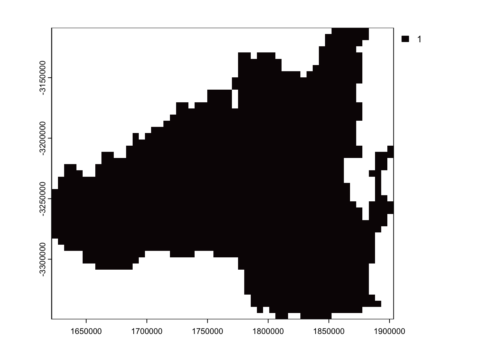
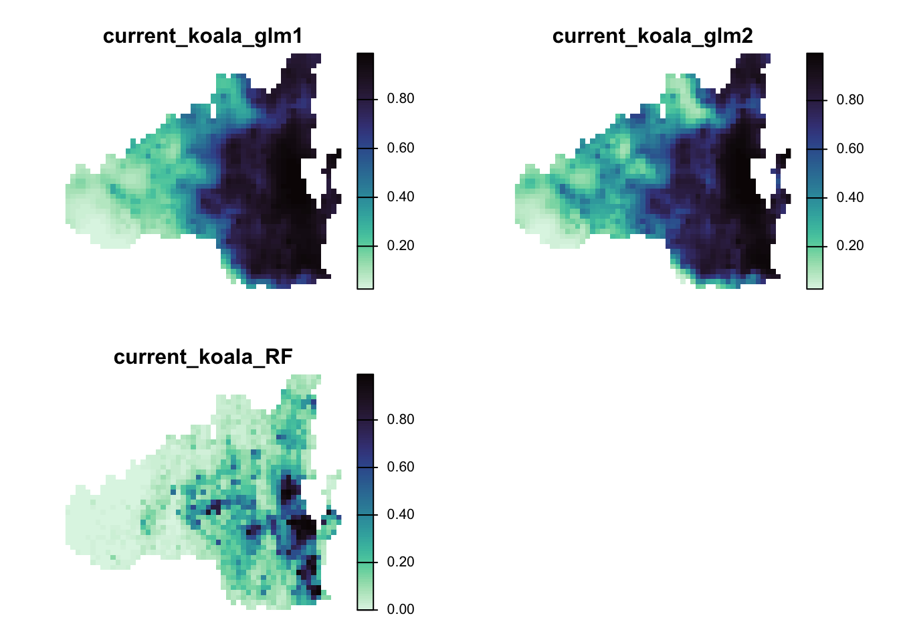
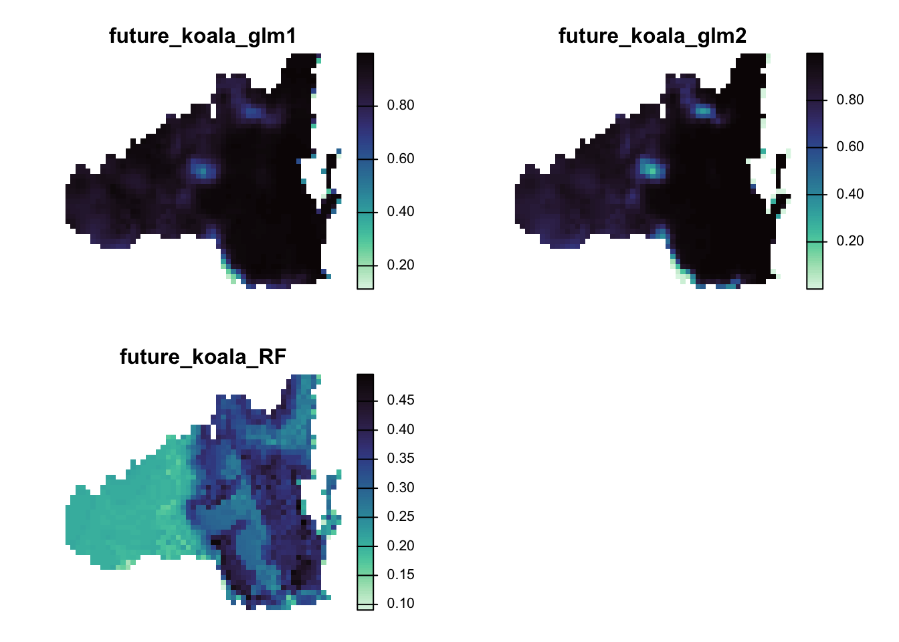
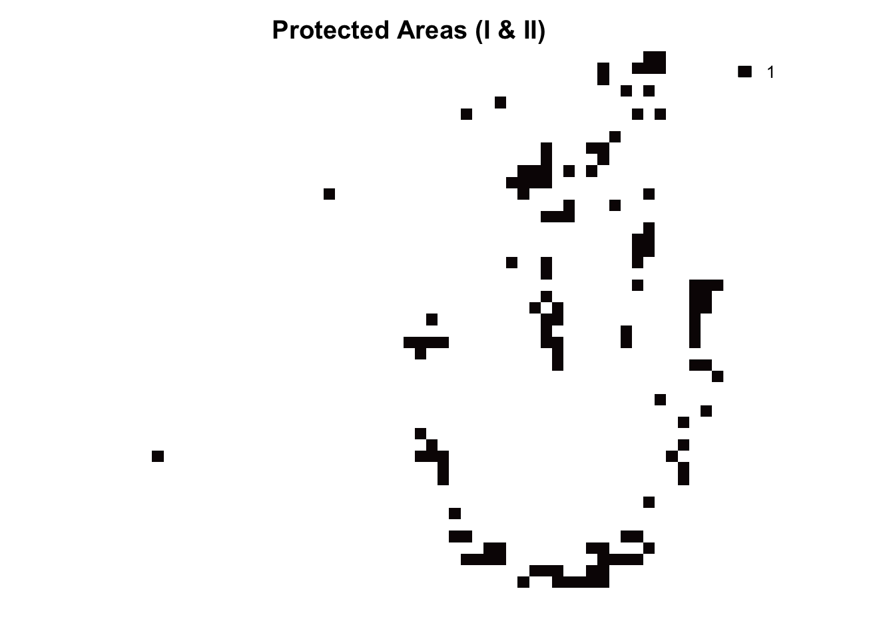
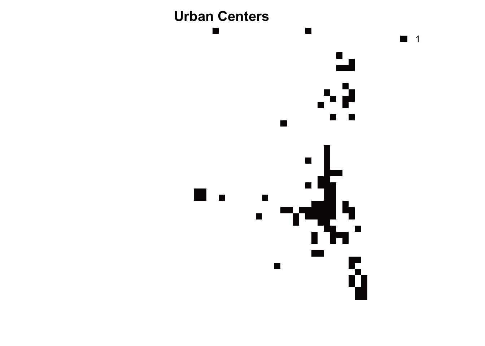
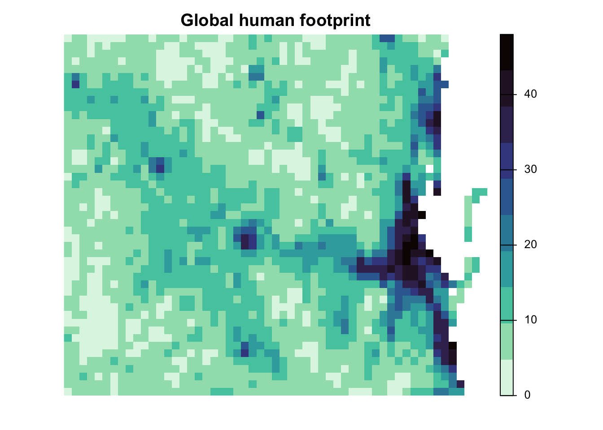
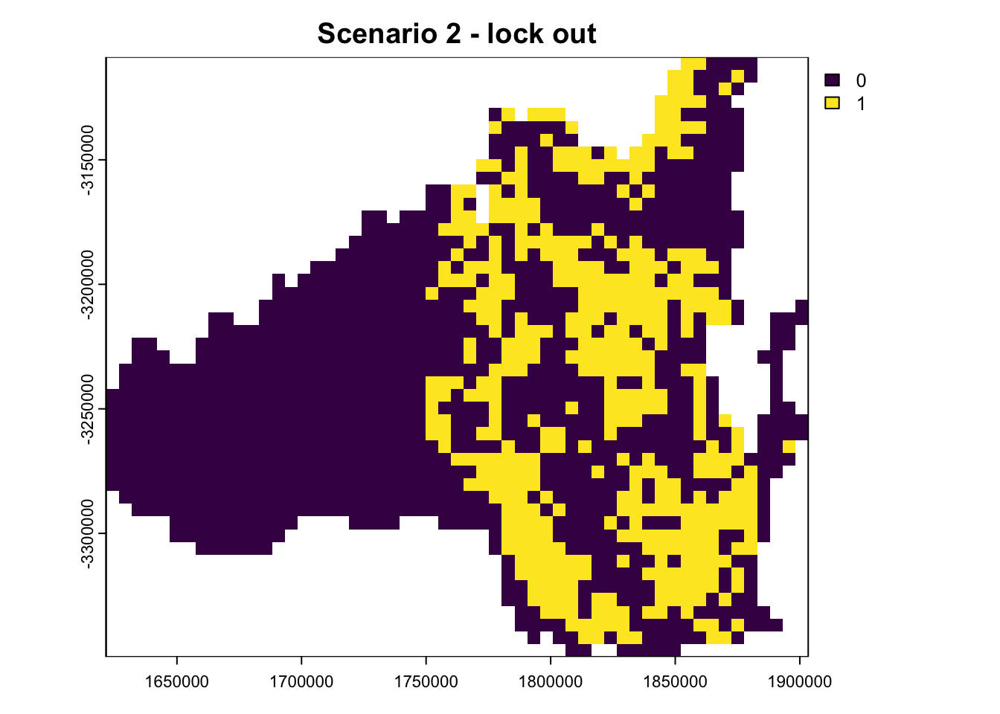
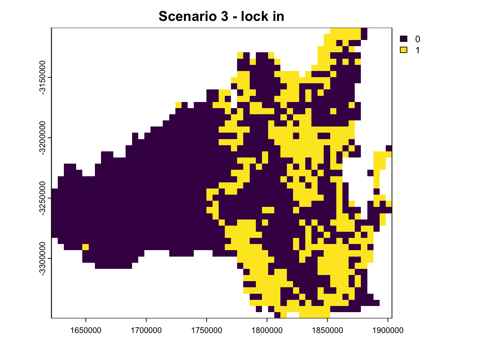
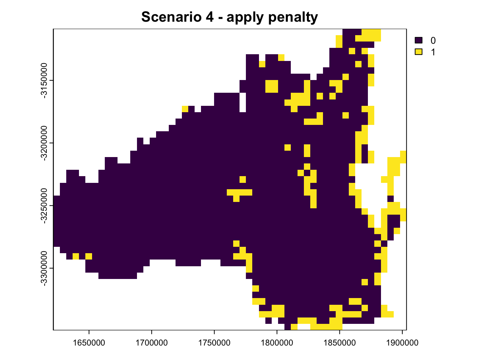
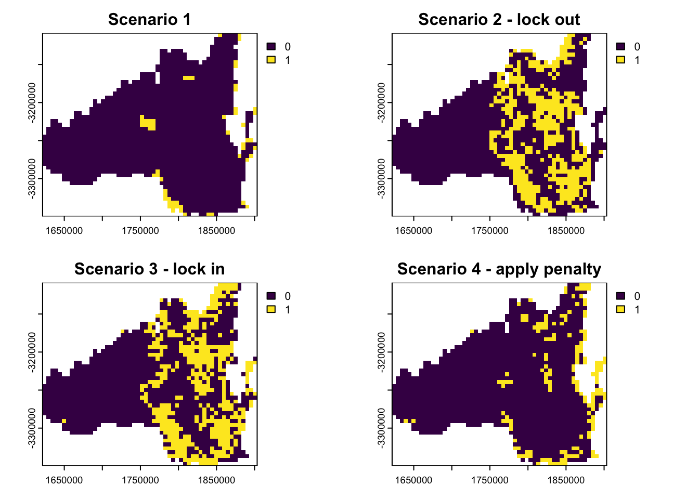

# Load required packages
library(terra)
library(viridisLite)
library(prioritizr)
library(raster)
library(sf)Session 4
Load Spatial Data
# Load the Planning unit
PU <- terra::rast("data/otherdata/PlanningUnits.tif")
plot(PU, col = viridisLite::mako(n = 1))
# Get the file names of the testing data
spp.list <- list.files(path = "data/SpeciesDistributions/", full.names = TRUE, recursive = TRUE, pattern = ".tif$")Load current species distribution
spp <- rast(spp.list[grep("current", spp.list)])
new_names <- tools::file_path_sans_ext(basename(spp.list[grep("current", spp.list)]))
names(spp) <- new_names
plot(spp, axes = FALSE, col = viridisLite::mako(n = 100, direction = -1), main = names(spp))
Load future species distribution
spp <- rast(spp.list[grep("future", spp.list)])
new_names <- tools::file_path_sans_ext(basename(spp.list[grep("future", spp.list)]))
names(spp) <- new_names
plot(spp, axes = FALSE, col = viridisLite::mako(n = 100, direction = -1), main = names(spp))
Load protected areas, urban centers, and cost layer
PA <- rast("data/otherdata/protected_areas.tif")
plot(PA, axes = FALSE, col = viridisLite::mako(n = 100, direction = -1), main = "Protected Areas (I & II)")
urban <- rast("data/otherdata/urban_centers.tif")
plot(urban, axes = FALSE, col = viridisLite::mako(n = 100, direction = -1), main = "Urban Centers")
hfp <- rast("data/otherdata/cost_hfp2013.tif")
plot(hfp, axes = FALSE, col = viridisLite::mako(n = 10, direction = -1), main = "Global human footprint")
Define Budget
budget.area <- round(0.3 * length(cells(PU)))Scenario 1: Basic Shortfall Objective
p <- problem(PU, spp) %>%
add_min_shortfall_objective(budget = budget.area) %>%
add_relative_targets(targets = 1) %>%
add_default_solver() %>%
add_proportion_decisions()
s1 <- solve(p)
plot(s1, main = "Scenario 1")
Scenario 2: Lock Out Urban Areas
p <- problem(PU, spp) %>%
add_min_shortfall_objective(budget = budget.area) %>%
add_relative_targets(targets = 1) %>%
add_proportion_decisions() %>%
add_locked_out_constraints(urban) %>%
add_default_solver()
s2 <- solve(p)
plot(s2, main = "Scenario 2 - lock out")
Scenario 3: Lock In Protected Areas
p <- problem(PU, spp) %>%
add_min_shortfall_objective(budget = budget.area) %>%
add_relative_targets(targets = 1) %>%
add_proportion_decisions() %>%
add_locked_in_constraints(PA) %>%
add_locked_out_constraints(urban) %>%
add_default_solver()
s3 <- solve(p)
plot(s3, main = "Scenario 3 - lock in")
Scenario 4: Penalize Human Footprint
p <- problem(PU, spp) %>%
add_min_shortfall_objective(budget = budget.area) %>%
add_relative_targets(targets = 1) %>%
add_linear_penalties(penalty = 1, data = hfp) %>%
add_proportion_decisions() %>%
add_locked_in_constraints(PA) %>%
add_locked_out_constraints(urban) %>%
add_default_solver()
s4 <- solve(p)
plot(s4, main = "Scenario 4 - apply penalty")
Plot All Scenarios Side by Side
par(mfrow = c(2, 2), mar = c(3, 3, 3, 1))
plot(s1, main = "Scenario 1")
plot(s2, main = "Scenario 2 - lock out")
plot(s3, main = "Scenario 3 - lock in")
plot(s4, main = "Scenario 4 - apply penalty")
par(mfrow = c(1, 1))Evaluate Metrics
rpz_target_spp_s1 <- eval_target_coverage_summary(p, s1)
mean(rpz_target_spp_s1$relative_held)[1] 0.02279414mean(rpz_target_spp_s1$relative_shortfall)[1] 0.9772059rpz_target_spp_s2 <- eval_target_coverage_summary(p, s2)
mean(rpz_target_spp_s2$relative_held)[1] 0.3410345mean(rpz_target_spp_s2$relative_shortfall)[1] 0.6589655rpz_target_spp_s3 <- eval_target_coverage_summary(p, s3)
mean(rpz_target_spp_s3$relative_held)[1] 0.3294218mean(rpz_target_spp_s3$relative_shortfall)[1] 0.6705782rpz_target_spp_s4 <- eval_target_coverage_summary(p, s4)
mean(rpz_target_spp_s4$relative_held)[1] 0.1013999mean(rpz_target_spp_s4$relative_shortfall)[1] 0.8986001